La civilización del antiguo Egipto ejerce una fascinación que no disminuye en absoluto y el panorama de obras y libros dedicados a este apasionante tema es amplísimo. A primera vista, por lo tanto, parecería superfluo y hasta arriesgado presentar a los lectores uno más. Sin embargo, analizando atentamente la extraordinaria cantidad de libros de divulgación sobre Egipto, resulta claro que no existía ni uno siquiera en el que las imagenes se hubieran utilizado como verdaderos documentos visuales para describir, nos sólo los aspectos arqueológicos e históricos, sino también los geográficos y antropológicos que van estrechamente ligados a los primeros.
Por lo que mi propuesta consiste en llenar este vacío ofreciendo al lector una documentación iconogáfica en muchos aspectos innovadora,que permite efectuar una lectura casi cinematográfica a través de unas imágenes atractivas, y sobre todo, cargadas de significado.
 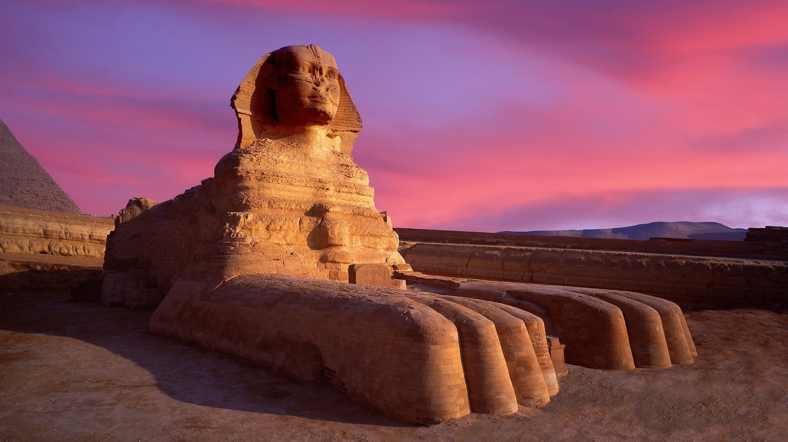
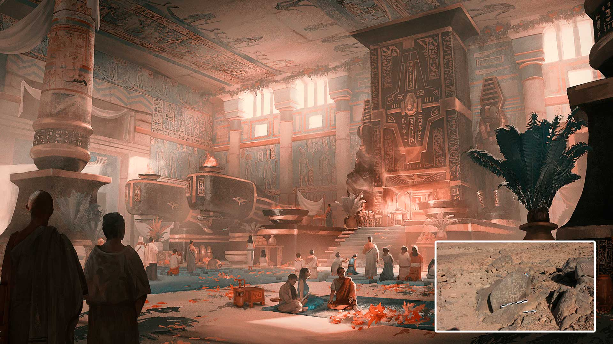
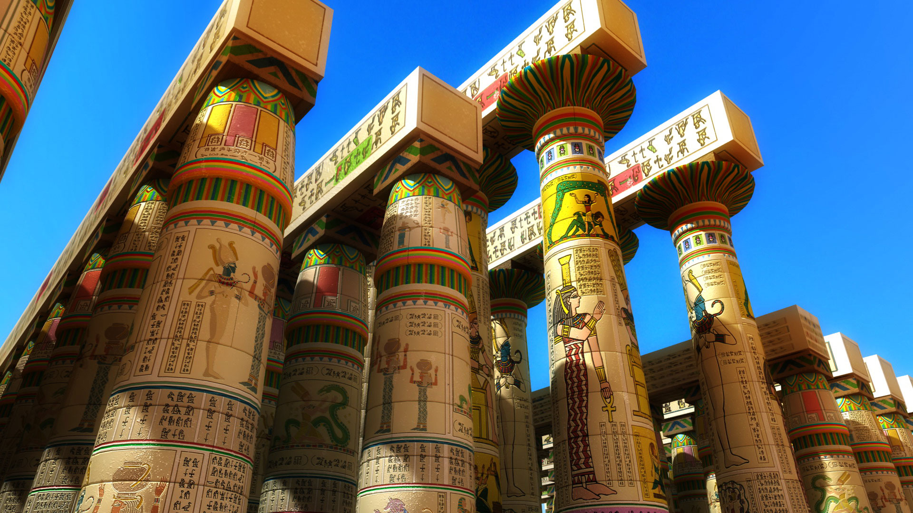
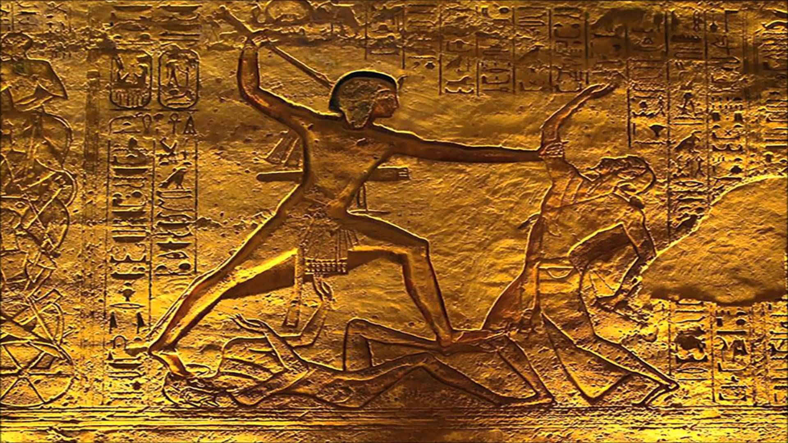
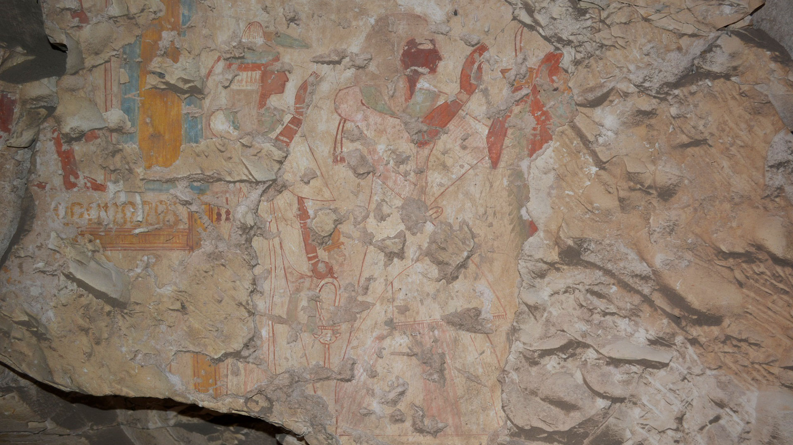
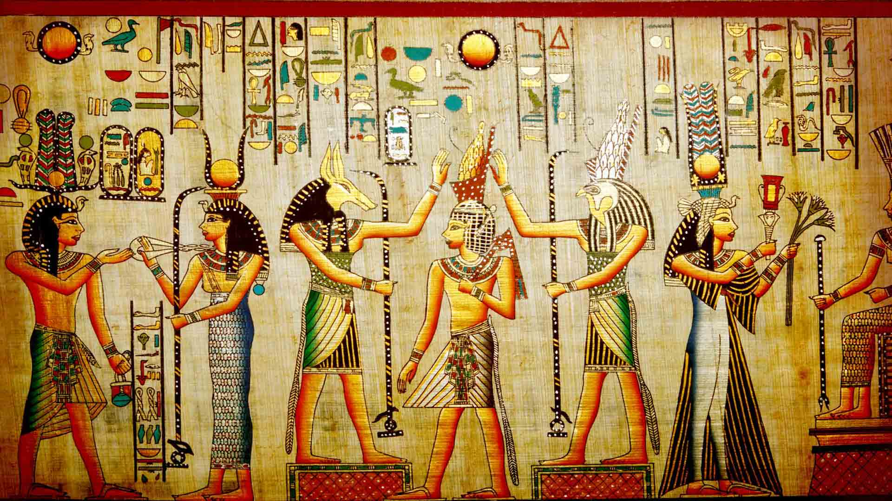
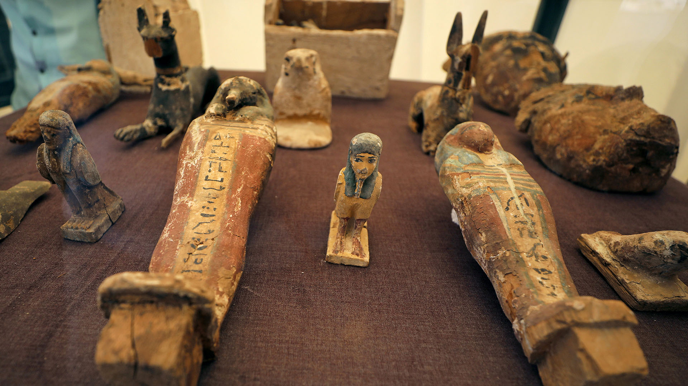
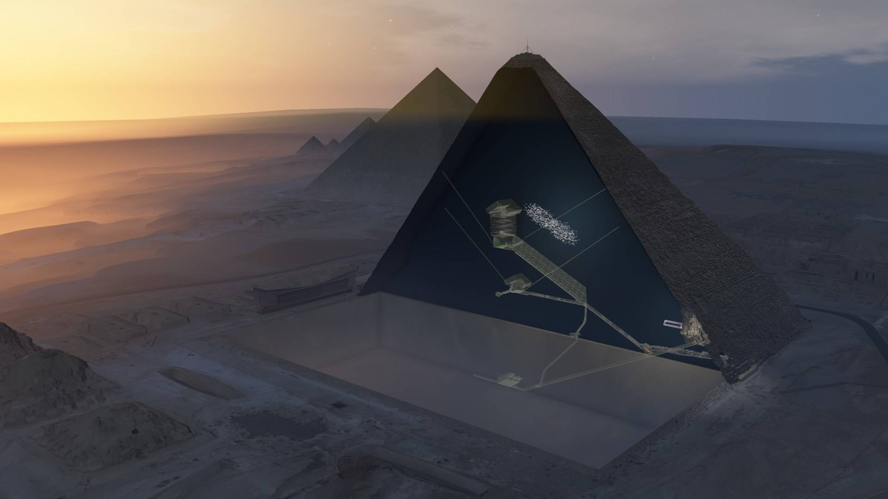
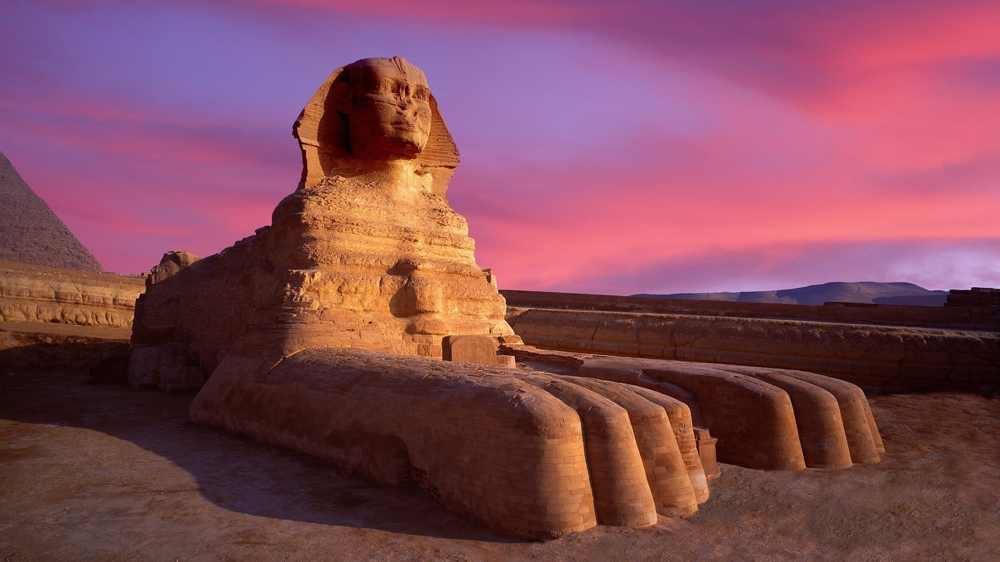
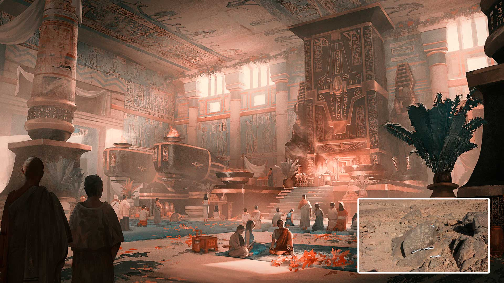
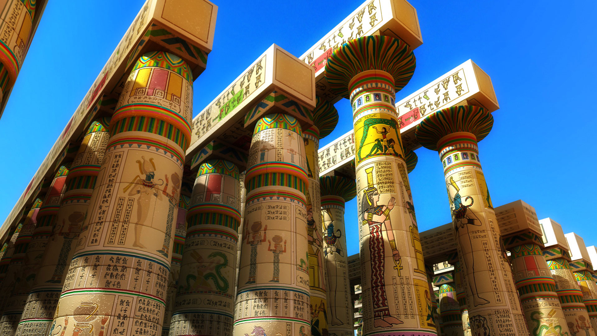
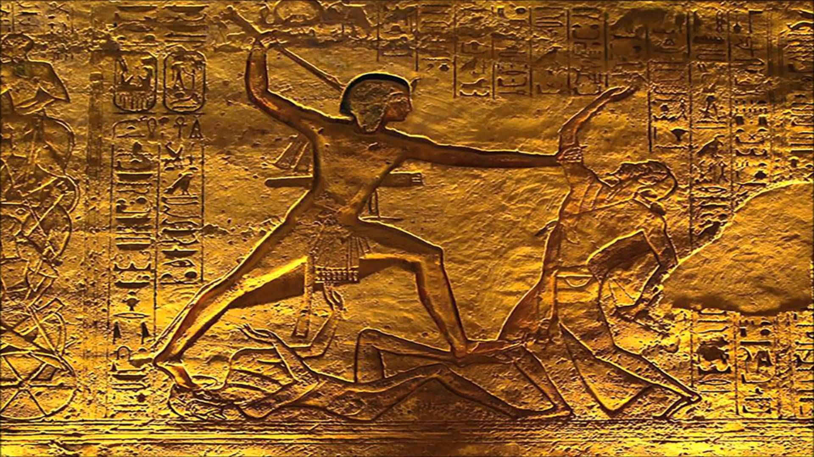
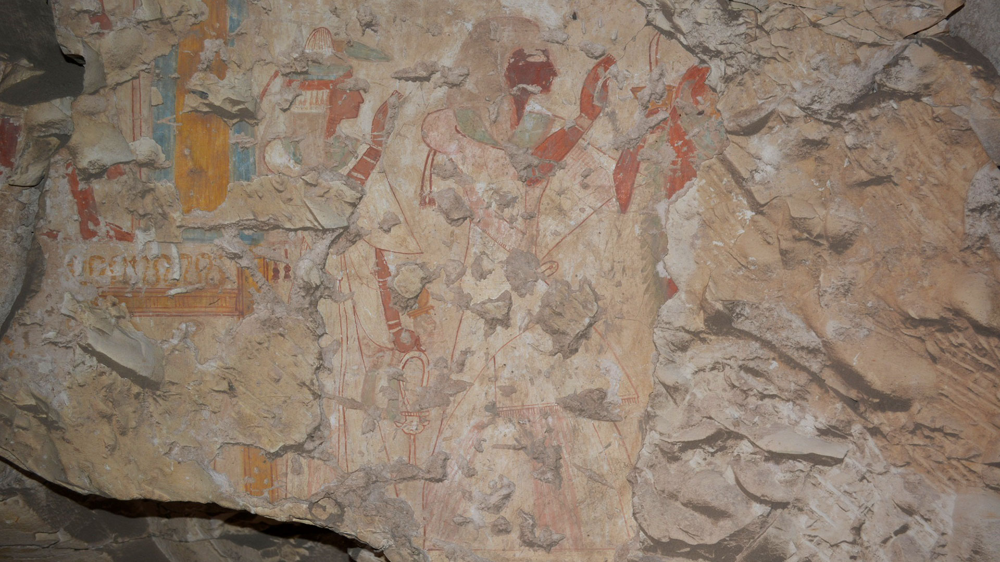
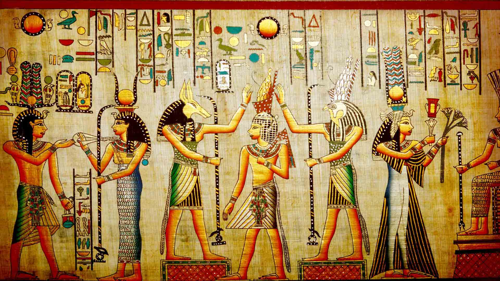
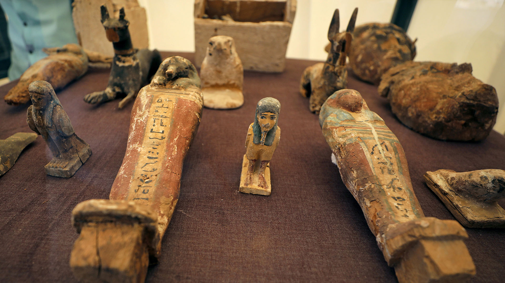
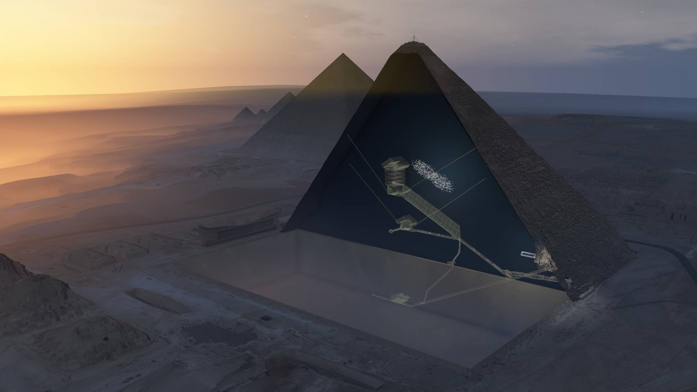
La geografía del Antiguo Egipto es muy significativa y va a influir muchísimo en su arte. Egipto está situado en el nordeste de África y está muy aislado de otros países por su situación geográfica. Sus límites son: por el oeste, el desierto de Libia; por el este, el desierto de Arabia; por el norte el mar Mediterráneo y por el sur el macizo de Etiopía y el desierto de Nubia.
La escritura ha sido un instrumento fundamental para el conocimiento de Egipto. No es hasta el siglo XIX cuando se empieza a conocer, a partir de la invasión de Napoleón, que llevó consigo algunos sabios franceses, entre los que cabe destacar a Denon (un grabador que hace una obra ilustrada de Egipto, que va a ser punto de arranque de la egiptología).
También fue fundamental para el conocimiento de la cultura egipcia la aparición de la piedra Rosetta, ciudad cercana a la desembocadura del Nilo, y es una piedra de basalto que tiene una inscripción trilingüe, en egipcio jeroglífico, griego y egipcio demótico, que reproduce un decreto de Ptolomeo V y que fue interpretada por Champolion en 1822. Otro hecho fundamental para el conocimiento de la cultura egipcia fue la abertura de la primera tumba inviolada en 1923, la de Tutankamón, por Carter y Carnavon, así como las cientos de excavaciones que se realizan a partir de estos momentos.